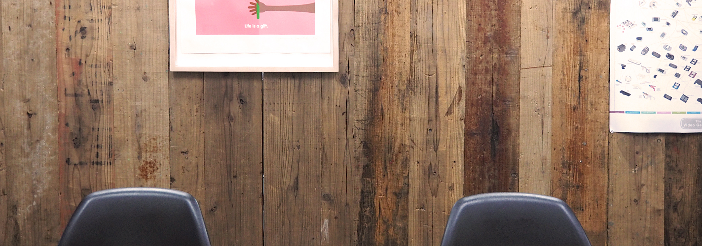

何よりも「人ありき」に。人と人をつなぐ関係をデザインします
多くのクライアントがWEBという媒体を使って自社の販促・PRを行う時代。
ご存知の通り、クライアントのお客様であるユーザーがWEBというプラットフォームを使い「欲しい」を探す時代になったから他ありません。
その背景を理解した上で、どのように自社をPRし探しているユーザーと繋がっていくか。どのクライアントにとっても重要課題です。
ninaはWEBサイト上でクライアントとユーザーの起点をつなぐ方法論として、日常のコミュニケーションと同様の考え方を持っています。
WEB上であっても「人」と「人」の関係や関わりは、日常の其れそのもの。
まずは相手を理解した上で、はじめて「つながる関係」というのは構築されると考えています。
伝えたい思いを「伝わること」へ。クライアントと共創します
クライアントに多くの場面でご提案しているのは、「伝えたい」立場と、ユーザー目線に立った時の「伝わる」ポイントのバランスです。
ユーザーが使いやすい・分かりやすいとは何か。「伝えたい」を「伝える」に変える共感ポイントはなにか。
「ユーザーにとって」に重きをおくと、自然とクライアントの伝えたいコトが感覚的に「伝わること」に変わるんです。
良いデザインには目的がしっかりあります。それはユーザーにとって、先が想像できる方法論でもあるからです。
ninaはクライアントのやりたいことの実現のために、誠心こめて丁寧に対応します。WEBサイトを作るのが初めての方もぜひお任せください。
才能やひらめきだけでデザインするだけではなく、伝えたいコトの要素を丁寧に整理し、ユーザーに伝わるサイトを一緒につくりましょう！
まずは、お気軽にお問い合わせください。
PROFILE
- 名称
- nina ARCHETYPE (ニナ・アーキタイプ)
- 代表者
- 藤岡 浩史
- 所在地
- 横浜市西区北幸(横浜駅から徒歩10分)
- 設立年月日
- 2016年8月1日
- 業務内容
- ブランディング・コミュニケーションデザイン／総合的なコミュニケーションデザインの企画・デザイン／C.I. / V.I. / ブランディングの企画・デザイン／販促プロモーションの企画・デザイン／Webサイトの企画・デザインおよび制作／アプリケーション・プロモーションツールのデザインおよび制作／ポスター・パンフレット・カタログ・パッケージ／ディスプレイ・媒体広告などのデザインおよび制作